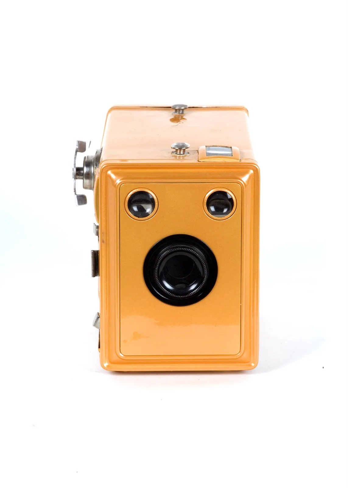
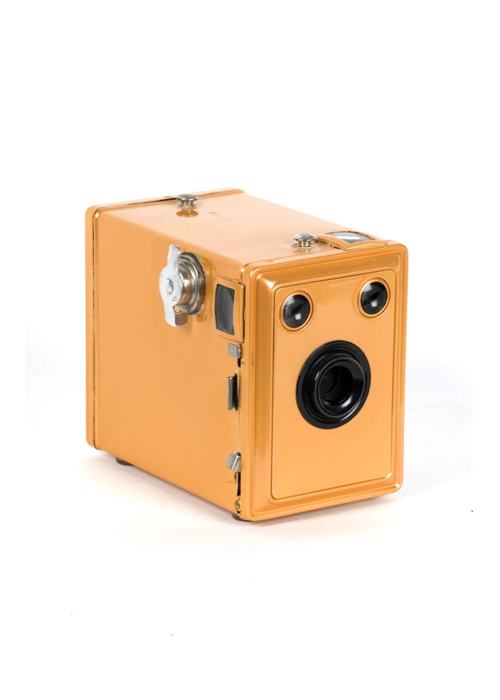
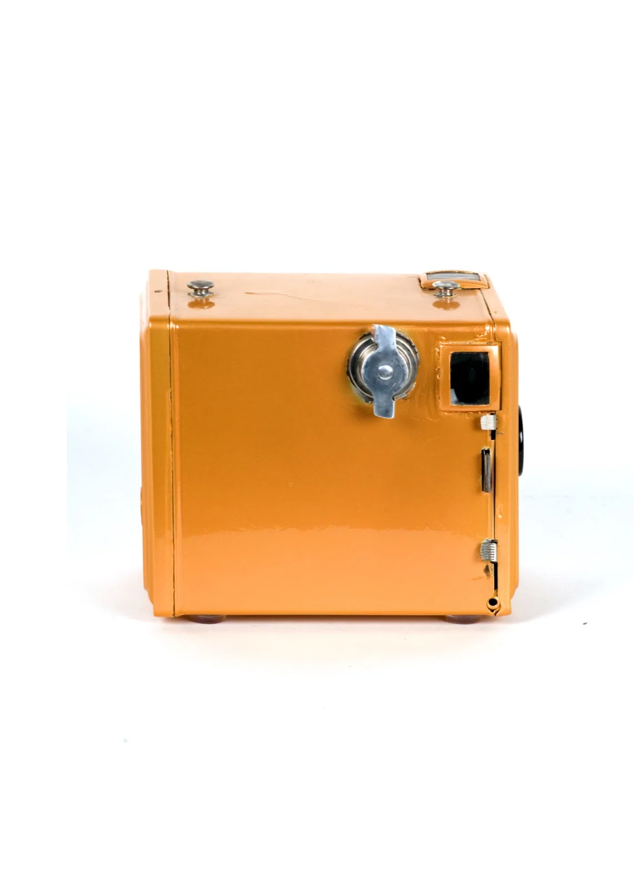
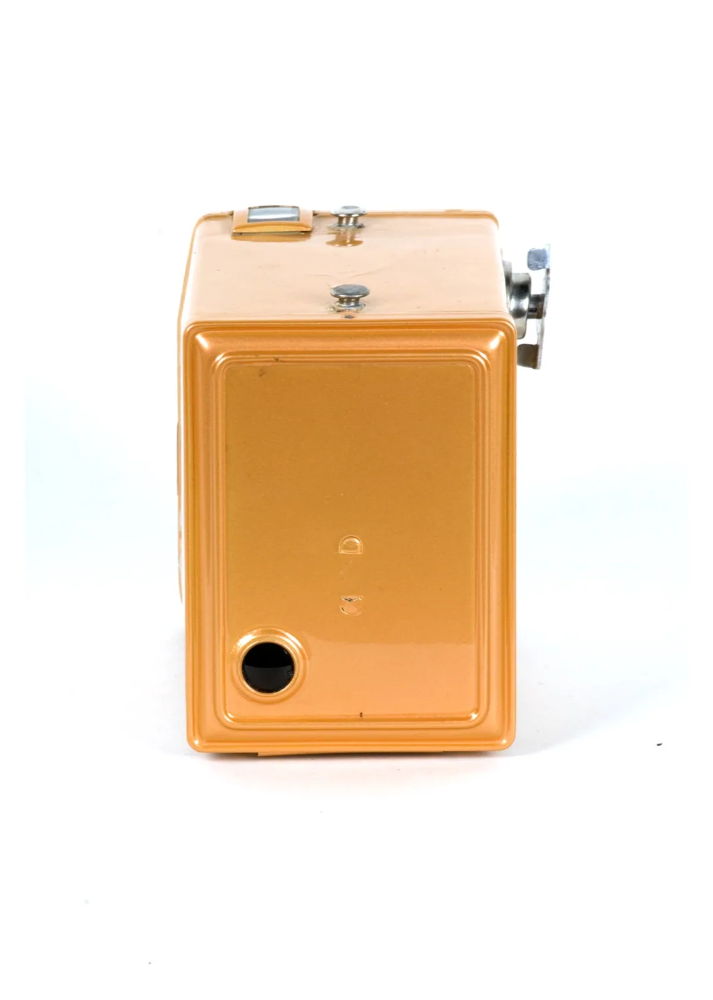
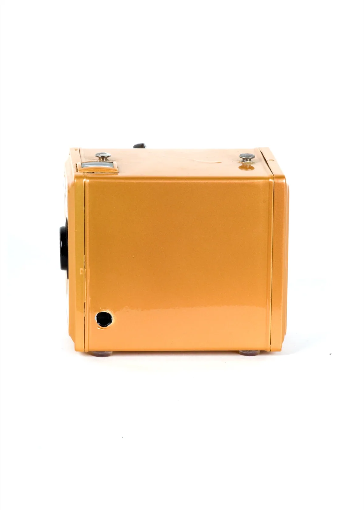

CamereCameras
Return Cam
Conversione stenopeica per rullo 120/220 — focale 90mm, angolo 57°, f/257, foro 0,35 µ
Conversione stenopeica per rullo 120/220 — focale 90mm, angolo 57°, f/257, foro 0,35 µ
Una camera a rullo riportata in vita come stenopeica: arancio acceso per un ritorno in grande stile.
A roll-film camera brought back to life as a pinhole: bright orange for a return in style.




